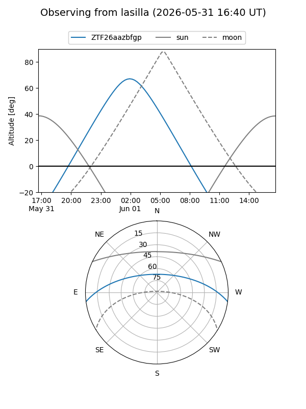
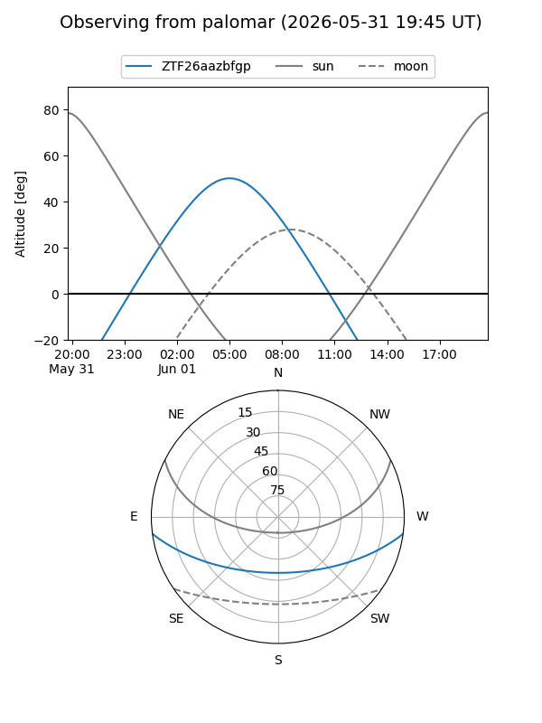

ZTF26aazbfgp
Target ZTF26aazbfgp at 2026-06-01 04:58
Aliases and brokers:
lsst-FINK: link
lsst-Lasair: link
lsst-ALeRCE: link
ztf-FINK: link
ztf-Lasair: link
ztf-ALeRCE: link
alt names
ZTF26aazbfgp (ztf,fink_ztf)
Coordinates:
equatorial (ra, dec) = 207.4883,-6.28161
equatorial (HMS+DMS) = 13:49:57.19,-06:16:53.79
galactic (l, b) = (328.0312,+53.71419)
Flags:
Photometry:
last ztfg=19.43
1 ztfg detections
Lightcurve
Visibility


Additional plots